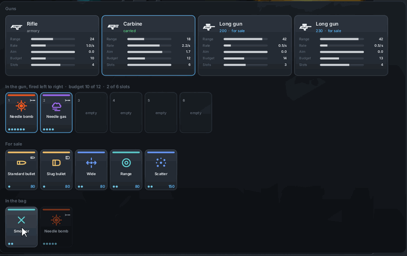
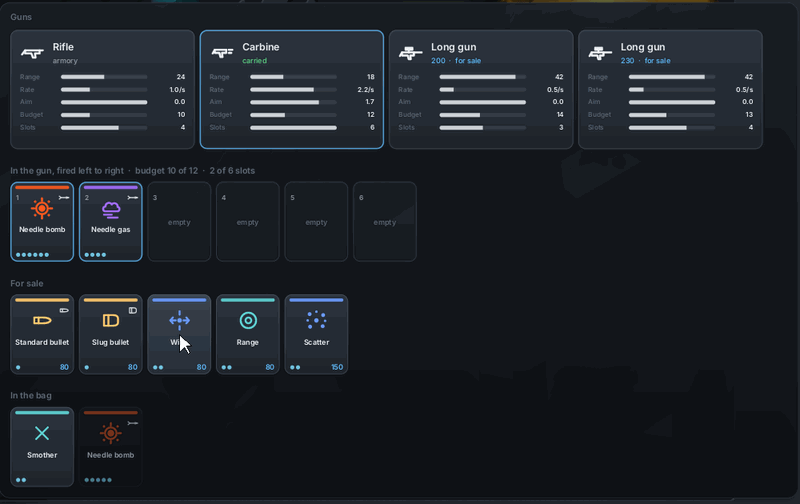

<title>Arranging The Gun</title>
<meta name="claude:viewport-fit-sides" content="cover">
<link rel="stylesheet" href="https://fonts.googleapis.com/css2?family=Space+Grotesk:wght@500;700&family=Inter:wght@400;600&display=swap">
<style>
/* Layout: one column; each film full width with its caption, then how-to and the rules. */
:root { --bg:#f2f3ef; --fg:#1c2023; --muted:#5b6366; --panel:#ffffff; --line:#d7d9d1; --accent:#5d7f3a;
  --display:"Space Grotesk",system-ui,sans-serif; --body:"Inter",system-ui,sans-serif; }
@media (prefers-color-scheme: dark) { :root:not([data-theme="light"]) { --bg:#121516; --fg:#e6e9e5; --muted:#99a2a2; --panel:#1a1e20; --line:#2b3134; --accent:#a3c97a; color-scheme:dark } }
:root[data-theme="dark"] { --bg:#121516; --fg:#e6e9e5; --muted:#99a2a2; --panel:#1a1e20; --line:#2b3134; --accent:#a3c97a; color-scheme:dark }
body { background:var(--bg); color:var(--fg); font-family:var(--body); line-height:1.55; margin:0; }
main { max-width:860px; margin:0 auto; padding-block:32px 48px; padding-left:max(16px, env(safe-area-inset-left, 0px)); padding-right:max(16px, env(safe-area-inset-right, 0px)); display:grid; gap:28px; }
h1, h2 { font-family:var(--display); text-wrap:balance; margin:0; }
h1 { font-size:2rem; } h2 { font-size:1.25rem; }
p { margin:0; max-width:65ch; }
.muted { color:var(--muted); }
section { display:grid; gap:12px; min-width:0; }
figure { margin:0; background:var(--panel); border:1px solid var(--line); border-radius:6px; overflow:hidden; }
figure img { display:block; width:100%; height:auto; }
figcaption { padding:10px 14px; display:flex; flex-wrap:wrap; gap:6px 14px; align-items:baseline; }
.tag { font-family:var(--display); font-weight:700; color:var(--accent); }
.note { color:var(--muted); }
ul { margin:0; padding-left:1.2em; display:grid; gap:6px; max-width:65ch; }
kbd { font-family:var(--body); font-size:.85em; border:1px solid var(--line); border-bottom-width:2px; border-radius:4px; padding:0 5px; background:var(--panel); }
</style>
<main>
  <header style="display:grid;gap:8px">
    <h1>Arranging the gun</h1>
    <p class="muted">Larder World run shop, 14 November. You asked how to move cards around in the gun. Now the gun fires its slots left to right, each slot shows its number, and you drag a card to change the order.</p>
  </header>

  <section>
    <h2>Reorder</h2>
    <figure><figcaption><span class="tag">Two drags</span><span class="note">Smother from the bag into slot 1: the gun fires smother, bomb, gas. Then Needle gas from slot 3 to slot 1: gas, smother, bomb.</span></figcaption></figure>
  </section>

  <section>
    <h2>Buy into a slot, take out</h2>
    <figure><figcaption><span class="tag">Two drags</span><span class="note">Wide dragged from the shelf onto slot 1 is bought for 80 points and goes in first (budget 12 of 12). Dragged onto the bag area, it comes out.</span></figcaption></figure>
  </section>

  <section>
    <h2>How it works</h2>
    <ul>
      <li><b>Drag a card onto a slot</b> to put it there. The cards after it move along one place.</li>
      <li>A bag card dropped on a slot goes in at that slot, if the gun's budget and slots allow it.</li>
      <li>A card for sale dropped on a slot is bought and put there. If the gun has no room, it goes into the bag.</li>
      <li>A card from the gun dropped on the bag area comes out.</li>
      <li><kbd>Q</kbd> and <kbd>E</kbd> move the focused card one slot earlier or later, and the focus moves with it.</li>
      <li>Clicking works as before. A card you buy or click in still lands before the first bullet, so a bought Wide widens that bullet.</li>
      <li>If you switch to a smaller gun, the last card that isn't a bullet comes out first, so the gun keeps something to fire.</li>
    </ul>
  </section>

  <p class="muted">These films come from the shop three planets into run 5, at 1600×900. The drags go through the menu's own mouse code and the window changes the run as it would in play. The arrow is drawn onto the frames at the pointer's logged position.</p>
</main>
